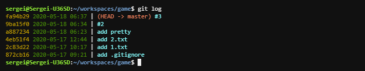

<pre style="display:block; margin:auto; width:50%; font-size:18px;">
#-------------------------------------------------------------------------------
# Красивый вывод списка коммитов
#-------------------------------------------------------------------------------


# Одноразовый вывод (без сохранения в конфиг)
git log -15 --all --graph --date=format:'%Y-%m-%d %H:%M' --pretty=format:'%C(yellow)%h%C(reset) %C(dim green)%cd%C(reset) |%C(#F78972)%d%C(reset) %C(#9AEDF1)%s'

# Сохранить в конфиг
git config --global format.pretty format:'%C(yellow)%h%C(reset) %C(dim green)%cd%C(reset) |%C(#F78972)%d%C(reset) %C(#9AEDF1)%s'
git config --global log.date format-local:'%Y-%m-%d %H:%M'

# Удалить из конфига
git config --global --unset format.pretty
git config --global --unset log.date

# Вывести последние 15 коммитов
git log --graph --all -15

#-------------------------------------------------------------------------------

git config --list | Вывести настройки всех конфигов.
git config --list --local | Тоже, самое, но для рабочей директории.
git config --list --global | Тоже, самое, но для пользователя.
git config --list --system | Тоже, самое, но для всех пользователей.
git config --global user.name 'value' | Добавить атрибут "user.name" со значением "value" в настройки пользователя.
git config --global --unset user.name | Удалит атрибут "user.name" из настроек пользователя.

#-------------------------------------------------------------------------------

# Алиасы
git config --global alias.l 'log --graph --all -15'
git config --global --unset alias.l

#-------------------------------------------------------------------------------
</pre>
